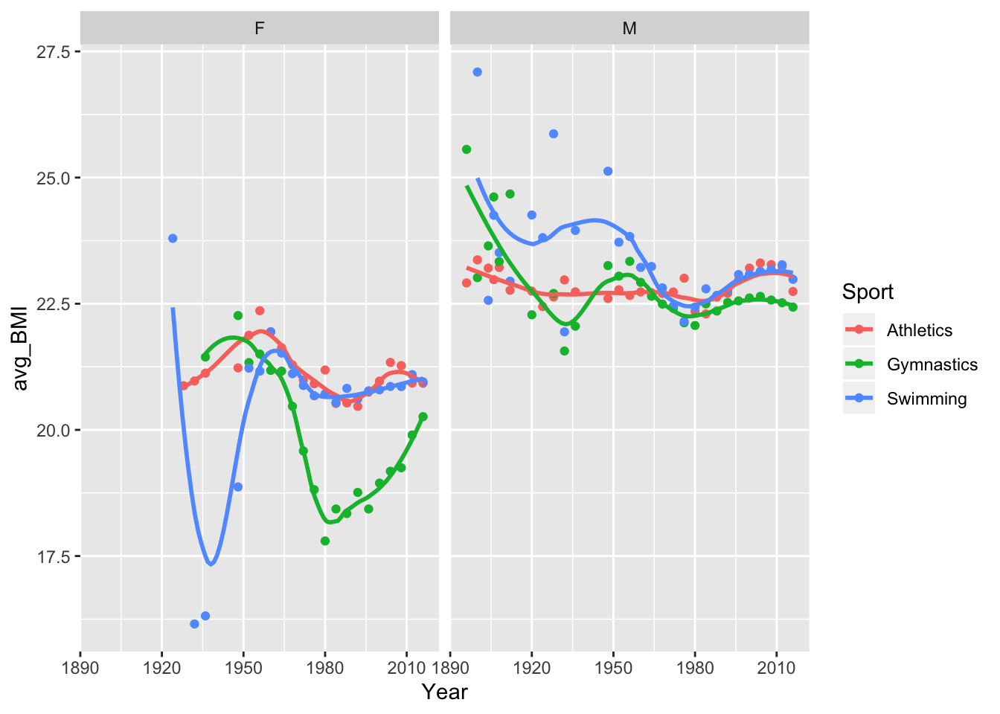
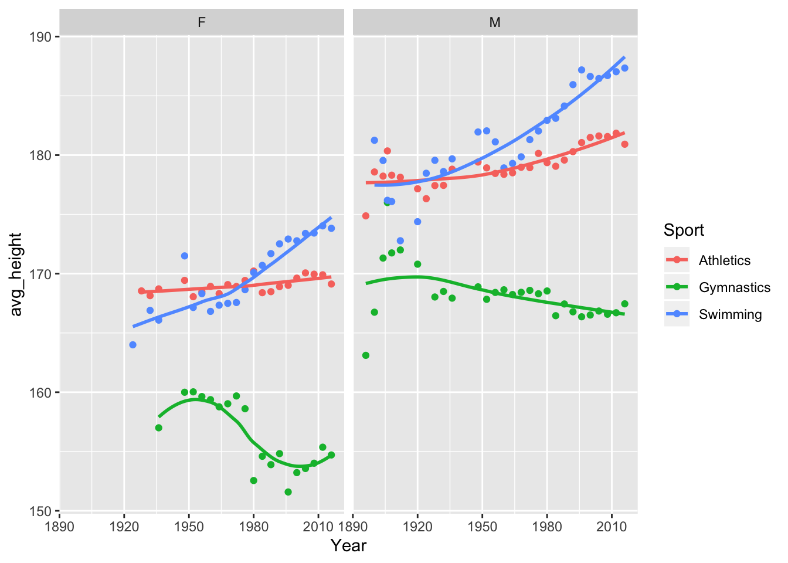
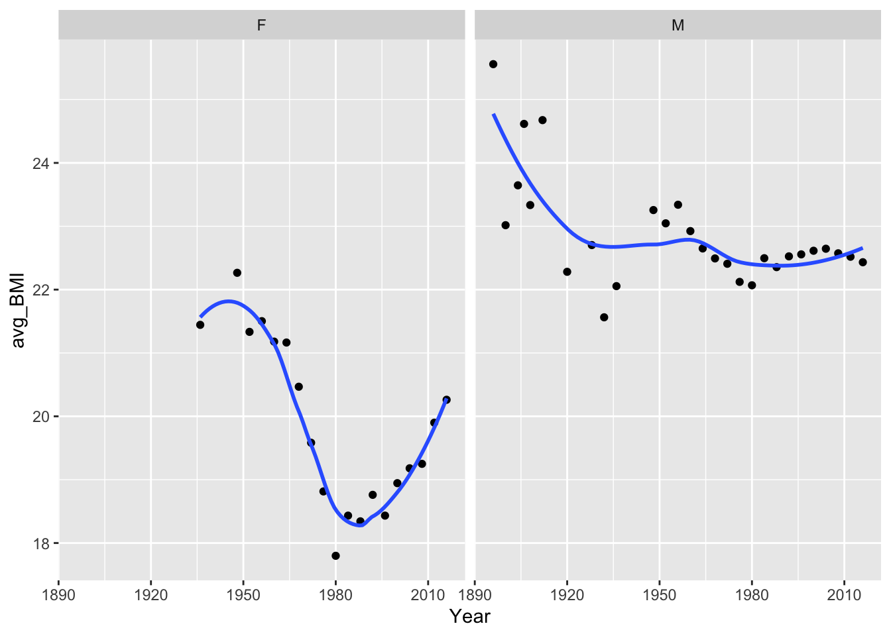
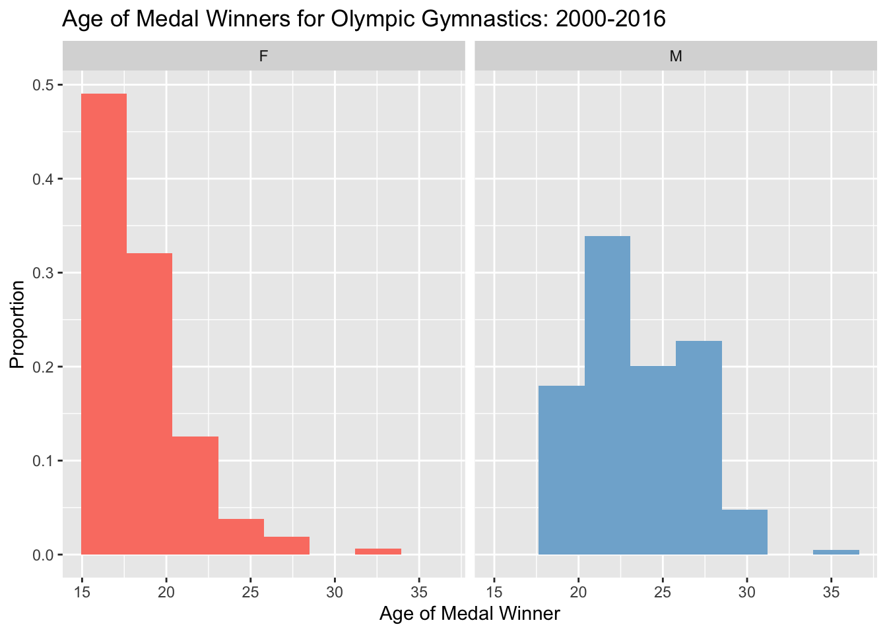
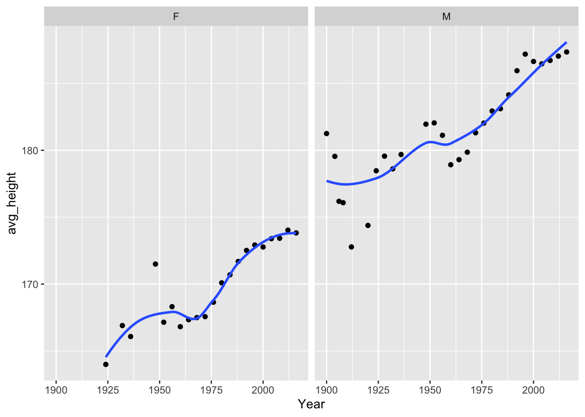
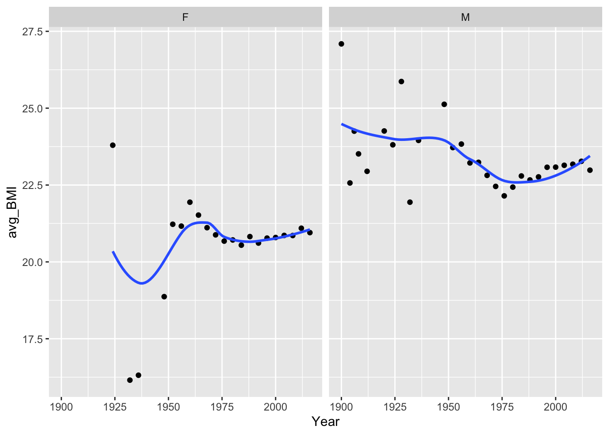
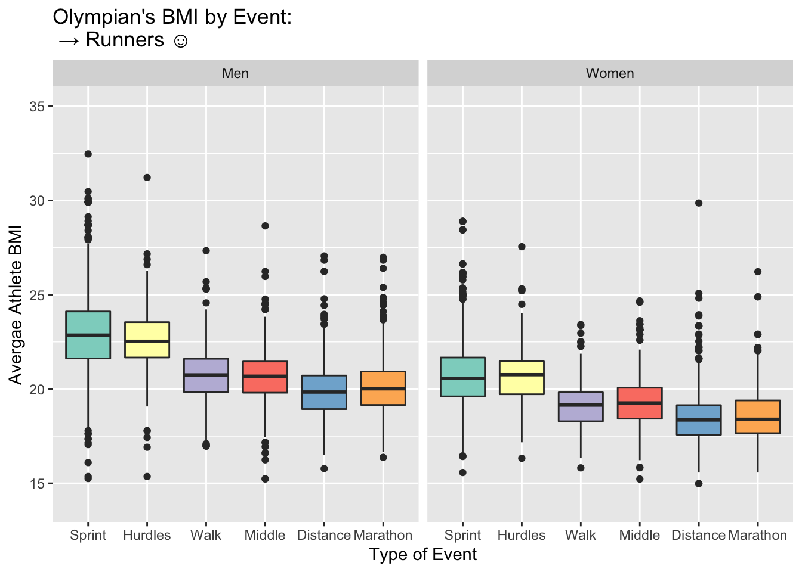
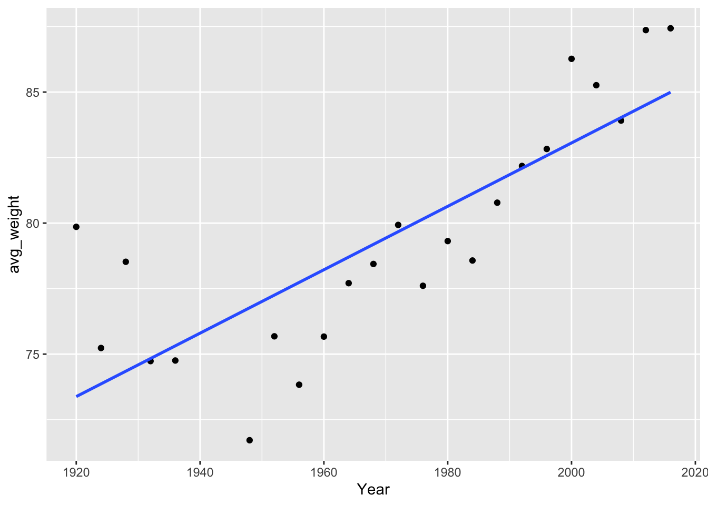
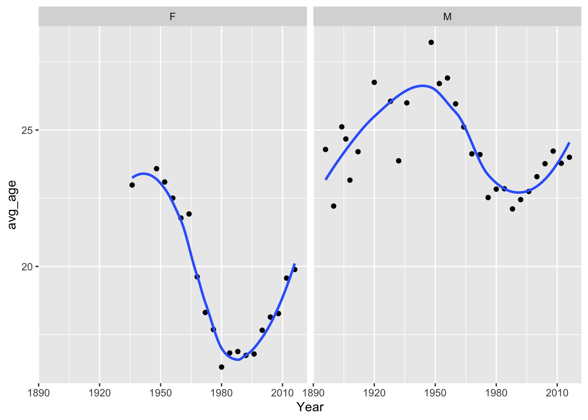
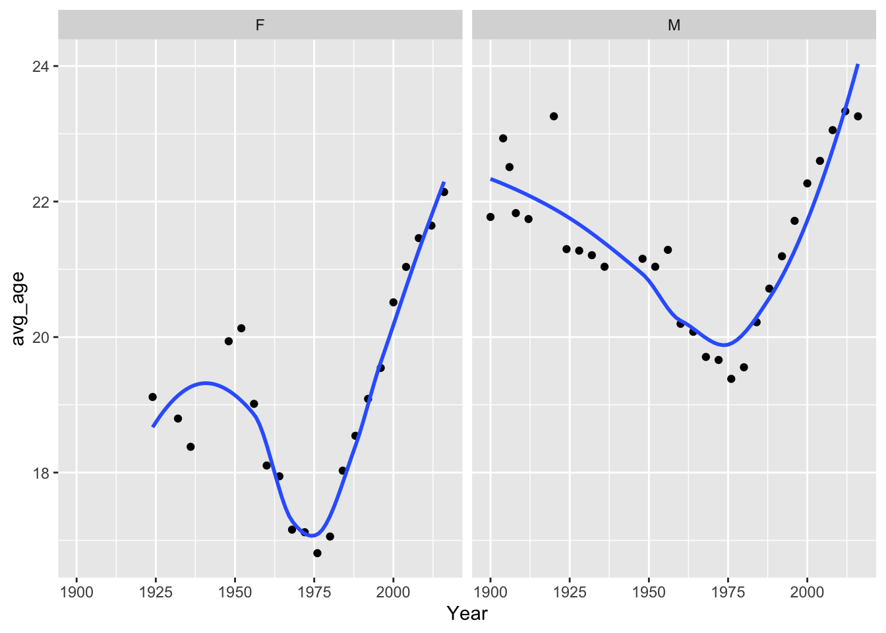

## ── Attaching packages ───────── tidyverse 1.2.1 ──## ✔ ggplot2 3.2.1 ✔ purrr 0.3.2
## ✔ tibble 2.1.3 ✔ dplyr 0.8.3
## ✔ tidyr 1.0.0 ✔ stringr 1.4.0
## ✔ readr 1.3.1 ✔ forcats 0.4.0## ── Conflicts ──────────── tidyverse_conflicts() ──
## ✖ dplyr::filter() masks stats::filter()
## ✖ dplyr::lag() masks stats::lag()## Parsed with column specification:
## cols(
## ID = col_double(),
## Name = col_character(),
## Sex = col_character(),
## Age = col_double(),
## Height = col_double(),
## Weight = col_double(),
## Team = col_character(),
## NOC = col_character(),
## Games = col_character(),
## Year = col_double(),
## Season = col_character(),
## City = col_character(),
## Sport = col_character(),
## Event = col_character(),
## Medal = col_character()
## )## Parsed with column specification:
## cols(
## NOC = col_character(),
## region = col_character(),
## notes = col_character()
## )athlete_all <- athlete_events %>%
filter(Sport == "Swimming" | Sport == "Gymnastics" | Sport == "Athletics") %>%
group_by(Year, Sex, Sport) %>%
summarize(
avg_height = mean(Height, na.rm = TRUE),
avg_weight = mean(Weight, na.rm = TRUE),
avg_age = mean(Age, na.rm = TRUE),
avg_BMI = mean(Weight, na.rm = TRUE) / ((mean(Height, na.rm = TRUE) / 100)*(mean(Height, na.rm = TRUE) / 100)))%>%
filter(avg_height != "NaN" & avg_weight != "NaN" & avg_age != "NaN")
ggplot(data = athlete_all, mapping = aes(x = Year, y = avg_BMI, color = Sport)) +
geom_point() +
geom_smooth(se = FALSE, span = .5) +
facet_wrap(~Sex)## `geom_smooth()` using method = 'loess' and formula 'y ~ x'
athlete_all <- athlete_events %>%
filter(Sport == "Swimming" | Sport == "Gymnastics" | Sport == "Athletics") %>%
group_by(Year, Sex, Sport) %>%
summarize(
avg_height = mean(Height, na.rm = TRUE),
avg_weight = mean(Weight, na.rm = TRUE),
avg_age = mean(Age, na.rm = TRUE),
avg_BMI = mean(Weight, na.rm = TRUE) / ((mean(Height, na.rm = TRUE) / 100)*(mean(Height, na.rm = TRUE) / 100)))%>%
filter(avg_height != "NaN" & avg_weight != "NaN" & avg_age != "NaN")
ggplot(data = athlete_all, mapping = aes(x = Year, y = avg_height, color = Sport)) +
geom_point() +
geom_smooth(se = FALSE, span = 1) +
facet_wrap(~Sex)## `geom_smooth()` using method = 'loess' and formula 'y ~ x'
#plotting
ggplot(data = gymnastics_by_year, mapping = aes(x = Year, y = avg_BMI)) +
geom_point() +
geom_smooth(se = FALSE, span = 0.75) +
facet_wrap(~Sex)## `geom_smooth()` using method = 'loess' and formula 'y ~ x'
ggplot(data = gymnastics_medal_winners,
mapping = aes(x = Age, fill = Sex)) +
geom_histogram(bins = 8,
aes(y = (..count..)/tapply(..count..,..PANEL..,sum)[..PANEL..])) +
facet_wrap(~Sex) +
labs(x = "Age of Medal Winner",
y = "Proportion",
title = "Age of Medal Winners for Olympic Gymnastics: 2000-2016") +
scale_fill_manual(values = c("#fb8072", "#80b1d3")) +
theme(legend.position = "none")
You can also embed plots, for example:
## `geom_smooth()` using method = 'loess' and formula 'y ~ x'
## `geom_smooth()` using method = 'loess' and formula 'y ~ x'
#comparing runners and swimmers BMI accross events
#400 or less
track_sprint_events <- list(
"Athletics Men's 100 metres",
"Athletics Women's 100 metres",
"Athletics Men's 200 metres",
"Athletics Women's 200 metres",
"Athletics Men's 400 metres",
"Athletics Women's 400 metres",
"Athletics Men's 4 x 100 metres Relay",
"Athletics Women's 4 x 100 metres Relay",
"Athletics Men's 4 x 400 metres Relay",
"Athletics Women's 4 x 400 metres Relay"
)
#steeple excluded
track_hurdle_events <- list(
"Athletics Men's 110 metres Hurdles",
"Athletics Women's 100 metres Hurdles",
"Athletics Men's 400 metres Hurdles",
"Athletics Women's 400 metres Hurdles"
)
#800 and 1500
track_middle_events <- list(
"Athletics Men's 1,500 metres",
"Athletics Women's 1,500 metres",
"Athletics Men's 800 metres",
"Athletics Women's 800 metres"
)
#3k and above, steeple included
track_distance_events <- list(
"Athletics Women's 3,000 metres",
"Athletics Men's 5,000 metres",
"Athletics Women's 5,000 metres",
"Athletics Men's 3,000 metres Steeplechase",
"Athletics Women's 3,000 metres Steeplechase",
"Athletics Men's 10,000 metres",
"Athletics Women's 10,000 metres"
)
track_marathon_events <- list(
"Athletics Men's Marathon",
"Athletics Women's Marathon"
)
track_walk_events <- list(
"Athletics Women's 10 kilometres Walk",
"Athletics Men's 20 kilometres Walk",
"Athletics Women's 20 kilometres Walk",
"Athletics Men's 50 kilometres Walk",
"Athletics Women's 50 kilometres Walk"
)
swim_free_sprint_events <- list(
"Swimming Women's 50 metres Freestyle",
"Swimming Women's 400 metres Freestyle",
"Swimming Women's 4 x 200 metres Freestyle Relay",
"Swimming Women's 4 x 100 metres Freestyle Relay",
"Swimming Women's 200 metres Freestyle",
"Swimming Women's 100 metres Freestyle",
"Swimming Men's 50 metres Freestyle",
"Swimming Men's 400 metres Freestyle",
"Swimming Men's 4 x 200 metres Freestyle Relay",
"Swimming Men's 4 x 100 metres Freestyle Relay",
"Swimming Men's 200 metres Freestyle",
"Swimming Men's 100 metres Freestyle"
)
swim_free_distance_events <- list(
"Swimming Men's 1,500 metres Freestyle",
"Swimming Women's 800 metres Freestyle",
"Swimming Women's 1,500 metres Freestyle",
"Swimming Men's 800 metres Freestyle",
"Swimming Men's 10 kilometres Open Water",
"Swimming Women's 10 kilometres Open Water"
)
swim_butterfly_events <- list(
"Swimming Women's 200 metres Butterfly",
"Swimming Women's 100 metres Butterfly",
"Swimming Men's 200 metres Butterfly",
"Swimming Men's 100 metres Butterfly"
)
swim_breast_events <- list(
"Swimming Women's 200 metres Breaststroke",
"Swimming Women's 100 metres Breaststroke",
"Swimming Men's 200 metres Breaststroke",
"Swimming Men's 100 metres Breaststroke"
)
swim_back_events <- list(
"Swimming Women's 200 metres Backstroke",
"Swimming Women's 100 metres Backstroke",
"Swimming Men's 200 metres Backstroke",
"Swimming Men's 100 metres Backstroke"
)
swim_IM_events <- list(
"Swimming Women's 400 metres Individual Medley",
"Swimming Women's 4 x 100 metres Medley Relay",
"Swimming Women's 200 metres Individual Medley",
"Swimming Men's 400 metres Individual Medley",
"Swimming Men's 4 x 100 metres Medley Relay",
"Swimming Men's 200 metres Individual Medley"
)track_event_order <- c("Sprint",
"Hurdles",
"Walk",
"Middle",
"Distance",
"Marathon")
swim_event_order <- c("IM",
"Breast",
"Sprint",
"Butterfly",
"Back",
"Distance")runner_BMI <- athlete_events %>%
filter(Sport == "Athletics", Year > 1990) %>%
mutate(BMI = Weight/((Height/100)*(Height/100))) %>%
#filter(grepl("0", Event)) %>%
mutate(event_catagory =
ifelse(Event %in% track_sprint_events, "Sprint",
ifelse(Event %in% track_distance_events, "Distance",
ifelse(Event %in% track_middle_events, "Middle",
ifelse(Event %in% track_hurdle_events, "Hurdles",
ifelse(Event %in% track_walk_events, "Walk",
ifelse(Event %in% track_marathon_events, "Marathon",
"Other"))))))) %>%
filter(event_catagory != "Other") %>% #get rid of field events
mutate(event_catagory = factor(event_catagory, levels = track_event_order)) %>%
mutate(Sex = ifelse(Sex == "M", "Men", "Women"))
swimmer_BMI <- athlete_events %>%
filter(Sport == "Swimming", Year > 1990) %>%
mutate(BMI = Weight/((Height/100)*(Height/100))) %>%
mutate(event_catagory =
ifelse(Event %in% swim_free_distance_events, "Distance",
ifelse(Event %in% swim_free_sprint_events, "Sprint",
ifelse(Event %in% swim_butterfly_events, "Butterfly",
ifelse(Event %in% swim_breast_events,"Breast",
ifelse(Event %in% swim_back_events, "Back",
ifelse(Event %in% swim_IM_events, "IM", "Other"))))))) %>%
mutate(event_catagory = factor(event_catagory, levels = swim_event_order)) %>%
mutate(Sex = ifelse(Sex == "M", "Men", "Women"))
# swimmer_runner_BMI <- runner_BMI %>%
# full_join(swimmer_BMI)
ggplot(data = runner_BMI, mapping = aes(x = factor(event_catagory), y = BMI, fill = event_catagory)) +
facet_wrap(~Sex) +
geom_boxplot() +
labs(x = "Type of Event",
y = "Avergae Athlete BMI",
title = "Olympian's BMI by Event: \n \u2192 Runners \u263a ")+
ylim(14, 35) +
scale_fill_brewer(palette = "Set3") +
theme(legend.position = "none") ## Warning: Removed 350 rows containing non-finite values (stat_boxplot).
ggplot(data = swimmer_BMI, mapping = aes(x = factor(event_catagory), y = BMI, fill = event_catagory)) +
facet_wrap(~Sex) +
geom_boxplot() +
labs(x = "Type of Event",
y = "Avergae Athlete BMI",
title = "Olympian's BMI by Event: \n \u2192 Swimmers \u263b") +
ylim(14, 35) +
scale_fill_brewer(palette = "Set3") +
theme(legend.position = "none")## Warning: Removed 990 rows containing non-finite values (stat_boxplot).
#Bad idea because the catagories for the two are different -> makes axis a mess
# ggplot(data = swimmer_runner_BMI, mapping = aes(factor(event_catagory), y = BMI)) +
# facet_grid(Sex ~ Sport) +
# geom_boxplot() +
# labs(x = "Type of Event",
# y = "Avergae Athlete BMI")
#facet_wrap(~grepl("Men", Event))##Weightlifting (men)
## Warning: Removed 908 rows containing non-finite values (stat_boxplot).
ggplot(data = gymnastics_by_year, mapping = aes(x = Year, y = avg_age)) +
geom_point() +
geom_smooth(se = FALSE, span = 0.75) +
facet_wrap(~Sex)## `geom_smooth()` using method = 'loess' and formula 'y ~ x'
ggplot(data = swim_by_year, mapping = aes(x = Year, y = avg_age)) +
geom_point() +
geom_smooth(se = FALSE, span = 0.75) +
facet_wrap(~Sex)## `geom_smooth()` using method = 'loess' and formula 'y ~ x'Note that the echo = FALSE parameter was added to the code chunk to prevent printing of the R code that generated the plot.